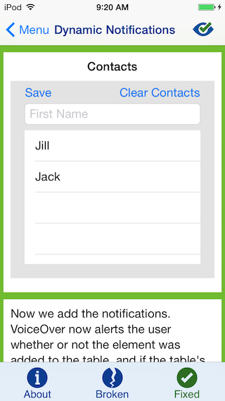

Dynamic Notifications are useful to alert the user when an element on-screen has been added, deleted, or somehow changed due to a user's action.
When sighted users use an application, they can visually obtain information about on-screen changes. Non-sighted users, however, need an aural clue so that they can better understand what is on-screen to navigate the app more easily. There are many scenarios in which Dynamic Notifications are essential to creating an accessible application. One common example is when a user presses a button. If the button changes an element (such as a dynamic image), it may be important to have VoiceOver focus on it and announce how the item changed. If the button adds or deletes an element (such as the example below), VoiceOver could announce what was added or deleted.
However, be careful not to add too many notifications! It is important to have a good balance. The user should be notified and up-to-date, but not overloaded with audible notifications. Too many notifications can become disruptive and make the app even more inaccessible. More about this can be seen under "Finding the Balance" in Updating Content.
To add a VoiceOver notification, simply use the following line of code in a function call:
whereUIAccessibilityPostNotification(UIAccessibilityNotification, UIObject);
UIAccessibilityNotification is one of the many notifications listed here, and UIObject is either a UIView or an NSString. Each UIAccessibility Notification has a different purpose. The most commonly-used ones are listed below.
UIAccessibilityAnnouncementNotifications are useful if you need VoiceOver to read out a custom announcement. To use this type of notification, copy and paste the above code, and replace UIAccessibilityNotification with UIAccessibilityAnnouncementNotification and UIObject with an NSString of the announcement you would like to have read out.
UIAccessibilityLayoutChangedNotifications are useful when an element has been added or changed and needs to be focused on. This is typically used for changes that take up a small portion of the screen. To use this notification, use the UIAccessibilityPostNotification function listed above, and replace UIAccessibilityNotification with UIAccessibilityLayoutChangedNotification and UIObject with a UIView (such as an image, a button, or a textfield). You can also use an NSString if you would like VoiceOver to announce a custom string. Note that using an NSString with this notification may be buggy in iOS 8.3 and prior.
UIAccessibilityScreenChangedNotification is similar to UIAccessibilityLayoutNotification in that it is useful to force VoiceOver to focus on an element; however, this should only be used if a major portion of the screen changed. This notification can be helpful to make VoiceOver focus on a modal dialog. To use this in your code, use the UIAccessibilityPostNotification function listed above, and replace UIAccessibilityNotification with UIAccessibilityScreenChangedNotification and UIObject with a UIView. You can also use an NSString if you would prefer to have VoiceOver read out a custom announcement to the user.
Below is an example of a simple list interface. To a sighted user, this interface is intuitive - tap "Save" to save a contact and tap "Clear Contacts" to delete the entire contents of the list. If the textfield is not empty and "save" is pressed, a sighted user can see that the name was successfully saved, and similarly with "Clear Contacts." However, what about to a non-sighted user? How can a non-sighted user receive clues about what happened when "Save" or "Clear Contacts" was pressed? When a VoiceOver user taps the "Save" button, by default, VoiceOver only announces "Save." There is no indication of what was saved or even if the save was successful or not. Similarly, when a VoiceOver user taps the "Clear Contacts" button, VoiceOver only announces "Clear Contacts." This is where Dynamic Notifications come into play!
When "Clear Contacts" is pressed, the function (NSString*)clearList is called. clearList deletes every contact in the contact list, and calls UIAccessibilityPostNotification to alert the VoiceOver user whether the list was successfully deleted. The function's code is below.
- (NSString*)clearList { NSString* announcement; //Creates announcement for if the list was cleared when clearContacts button was pressed. if([_contactList count] == 0) { announcement = NSLocalizedString(@"NO_CONTACTS", nil); } else { announcement = NSLocalizedString(@"CONTACTS_DELETED", nil); } [_contactList removeAllObjects]; [self._tableView reloadData]; [DQUtilities createDynamicNotification:announcement]; // Prompts VoiceOver to announce the change in the list. return announcement; }
Notice how first, the function takes into account whether the contact list is empty or not. It then creates an announcement with the localized string "NO_CONTACTS" or "CONTACTS_DELETED," depending on the context. (A localized string is a string placed into the "Localizable.strings" file, so that in case your app gets translated, all programmatically defined strings can be easily found in one file.) "NO_CONTACTS", in the Localizable.strings file, is defined as "Contact list empty - no contacts deleted," and "CONTACTS_DELETED" is defined as "Contacts have been deleted." So, NSString announcement is assigned to either "Contact list empty - no contacts deleted" or "Contacts have been deleted." This NSString then gets passed to the function createDynamicNotification. Below is the code for createDynamicNotification.
+ (void)createDynamicNotification:(NSString*)announcement { dispatch_after(dispatch_time(DISPATCH_TIME_NOW, NSEC_PER_SEC), dispatch_get_main_queue(), ^{ UIAccessibilityPostNotification(UIAccessibilityAnnouncementNotification, announcement); }); }
createDynamicNotification calls UIAccessibilityPostNotification, which has its first parameter defined as UIAccessibilityAnnouncementNotification. createDynamicNotification calls dispatch_time, a time delay function, to ensure that the notification will be posted by VoiceOver. This way, when "Clear Contacts" is pressed, our notification of "Contacts have been deleted" is not interrupted by VoiceOver's "Clear Contacts" statement. So, when "Clear Contacts" is pressed, if the contact list is empty, the VoiceOver user will be alerted that no contacts were deleted because the list is empty. If the contact list is not empty, the VoiceOver user will be alerted that contacts were successfully deleted.
The "Save" button is implemented in a similar fashion. When "Save" is pressed, the function saveItem is called, which contains UIAccessibilityPostNotification. saveItem checks if the textfield is empty, and if it is, it notifies VoiceOver to post "Textfield empty - no name added to contacts." If the textfield is not empty, VoiceOver posts "Item was added to contacts," where Item is the text that was written in the textfield. saveItem then clears the textfield, removes the keyboard, and adds the contact to the list.
If you would like to see full code for this example, it can be found on Github.
UIAccessibilityLayoutChangedNotification to announce NSStrings, for it may not work. It is known to be buggy.UIAccessibilityAnnouncementNotification, or any notification to announce NSStrings, limit your notification to at most a sentence. Keep it short and informative!We hope you found this tutorial useful! Check out our other blog posts and our Deque University for iOS app for more accessibility tutorials!